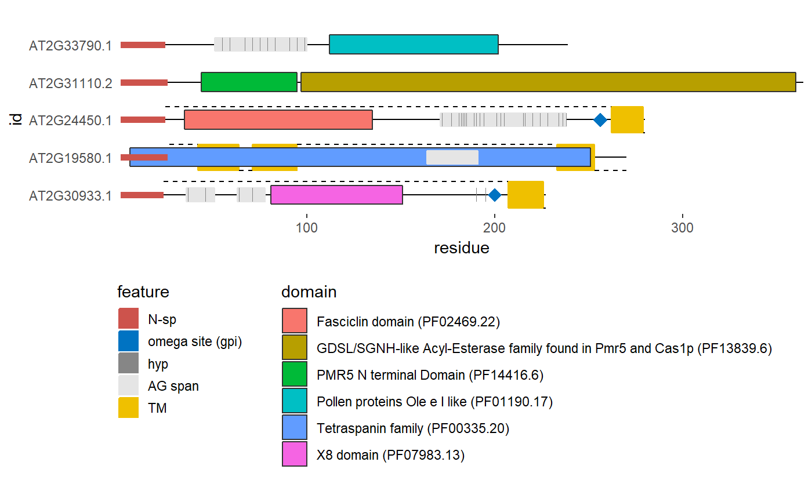

Plots a diagram of protein structure based on hmmscan domain annotation and several types of predictions.
plot_prot(sequence, id, hyp_col = "#868686FF", gpi_col = "#0073C2FF", nsp_col = "#CD534CFF", ag_col = "#E5E5E5FF", tm_col = "#EFC000FF", hyp = TRUE, gpi = c("bigpi", "predgpi", "none"), nsp = TRUE, ag = TRUE, tm = TRUE, domain = TRUE, disorder = FALSE, dom_sort = c("ievalue", "abc", "cba"), progress = FALSE, ...)
| sequence | String representing a protein amino acid sequence. |
|---|---|
| id | String representing a protein identifier. Will be converted using |
| hyp_col | Plotting color of predicted hydroxyproline positions. At default set to: '#868686FF'. |
| gpi_col | Plotting color of the predicted omega site (glycosylphosphatidylinositol attachment). At default set to: '#0073C2FF'. |
| nsp_col | Plotting color of the N-terminal signal peptide. At default set to: '#CD534CFF'. |
| ag_col | Plotting color of the AG glycomodul spans. At default set to: '#E5E5E5FF'. |
| tm_col | Plotting color of the transmembrane regions. At default set to: '#EFC000FF'. |
| hyp | Bolean, should hydroxyprolines be plotted. |
| gpi | A string indicating if |
| nsp | Bolean, should the N-terminal signal peptide be plotted. |
| ag | Bolean, should the AG glycomodul spans be plotted. |
| tm | Bolean, should the transmembrane regions be plotted. |
| domain | Bolean, should the domains be plotted. |
| disorder | Bolean, should disordered regions be plotted. |
| dom_sort | One of c("ievalue", "abc", "cba"), defaults to "abc". Domain plotting order. If 'ievalue' domains with the lowest ievalue as determined by hmmscan will be plotted above. If 'abc' or 'cba' the order is determined by domain Names. |
| progress | Bolean, whether to show the progress bar, at default set to FALSE. |
| ... | Appropriate arguments passed to |
A ggplot2 plot object
library(ragp) library(ggplot2)#> Warning: package 'ggplot2' was built under R version 3.5.2ind <- c(23, 5, 80, 81, 345) pred <- plot_prot(sequence = at_nsp$sequence[ind], id = at_nsp$Transcript.id[ind]) pred + theme(legend.position = "bottom", legend.direction = "vertical")